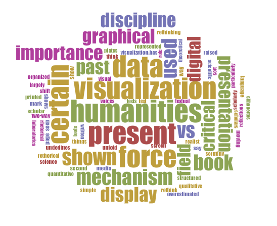

Data vs Presentation
What is the core of a Scholarly Digital Edition?
This is a provocative statement by a design guru
"The real problem with interface is that it is an interface. Interfaces get in the way. I don't want to focus my energies on interface. I want to focus on my job"
Donal A. Norman
Plaidoyer for the presentation

or why we should care about presentation
Table of contents
1. SDE as an act of communication
What is a (D)SE?
"The scholarly edition's basic task is to present a reliable text [...]"
"A scholarly edition is an information resource [...]"
P. Sahle
Our definition of an edition begins with the idea that all editions are mediations of some kind: they are a medium through which we encounter some text or document and through which we can study it. In this sense an edition is a re-presentation, a representational apparatus, and as such it carries the responsibility not only to achieve that mediation but also to explain it: to make the apparatus visible and accessible to criticism.
What is a (D)SE?
It is an act of communication.
The editor makes a work available
by editing it.
As in any act of communication,
the presentation (as a signifier)
is important.
One of the editor's aim = communicate
→
should find out the best way to do it.
The Dynamic Table of Contexts
by Inke, CWRC, UAP, Voyant
The Dynamic Table of Contexts is an experiment in combining the table of contents with an interactive index created from interpretive XML encoding.
The Dynamic Table of Contexts
The user has access to the text (on the right), to the encoding (the 'tags' column on the left) and to the structure of the text (the 'table of contents'). These features have been combined: when the user selects a tag, she will also see where the tag appears in the text and in the table of contents.
The access to the data is easy and multiple.
The access to the data is easy and multiple.
This makes the act of communication very effective!
The Proceedings of the OLD BAILEY
London's Central Criminal Court, 1674 to 1913
- A trial. Look at the XML data (there is a link at the bottom of the trial text): the "Three Compasses" is a <placename>. But this information is not visualized ...
- Which is a pity! Beacause in the same edition there are beautiful maps of the period.
- (There is a link the other way around, from the map to the trial)
This data is almost lost, because there is little access to it.
The act of communication is not very effective.
The act of communication is not very effective.
Around a sequence and some notes of Notebook 46: encoding issues about Proust's drafts
Elena Pierazzo (King’s College, London) et Julie André (ITEM, Sciences Po Paris) | With the support of Raffaele Viglianti
Information would have been lost with a side-by-side visualization of text and image.
"Proust considered his writing space to be the opening as a whole, as he used to write only on the right side of the opening of his own notebooks and used the left side for additions, corrections and rewriting. Therefore, the pageby-page visualization that has become the standard for some types of digital editions was not an option"
E. Pierazzo, Digital Scholarly Editing: Theories, Models and Methods
2. Same same but different
The rethorical force of graphical display and the power of interactivity
Visualization tools and DH
Visualization tools are largely used in DH, they can even be seen as a distinctive mark of the discipline.
The importance of a certain presentation of data is (or should be) particularly clear in the field of scholarly editions: textual scholars have devoted attention to how, where and why a certain text is displayed in a certain way on the page and in the book.
The shift from a printed book to a digital screen has stimulate reflections on how to present data.
The importance of a certain presentation of data is (or should be) particularly clear in the field of scholarly editions: textual scholars have devoted attention to how, where and why a certain text is displayed in a certain way on the page and in the book.
The shift from a printed book to a digital screen has stimulate reflections on how to present data.
Visualization has been so intensively used that critical voices have raised.
Johanna Drucker (Humanities Approach to Graphical Display, 2011) underlines the role of the Humanities in rethinking visualization of data, or, as she put it, of capta (what the scholar collects as data), highlightening the interpretative (vs realist) and qualitative (vs quantitative) aspects of the information to be represented.
Johanna Drucker (Humanities Approach to Graphical Display, 2011) underlines the role of the Humanities in rethinking visualization of data, or, as she put it, of capta (what the scholar collects as data), highlightening the interpretative (vs realist) and qualitative (vs quantitative) aspects of the information to be represented.
Digital Humanities is encouraging the Humanities to rethink visualization.
"As Dagognet has shown in two excellent books, no scientific discipline exists without first inventing a visual and written language which allows it to break with its confusing past (1969, 1973)"
Bruno Latour, Visualization and cognition
"The rhetorical force of graphical display is too important a field for its design to be adopted without critical scrutiny and the full force of theoretical insight"
Johanna Drucker, Humanities Approach to Graphical Display
The rethorical force of graphical display
"«You doubt of what I say ? I’ll show you». And, without moving more than a few inches, I unfold in front of your eyes figures, diagrams, plates, texts, silhouettes, and then and there present things that are far away and with which some sort of two-way connection has now been established. I do not think the importance of this simple mechanism can be overestimated. Eisenstein has shown it for the past of science, but ethnography of present laboratories shows the same mechanism"
Bruno Latour, Visualization and cognition
Same same but different
The rethorical force of graphical display and the power of interactivity makes the difference, even when data are the same.
The humanities approach consists [...] of examining the objects of study from as many reasonable and original perspectives as possible to develop convincing interpretations.
[...] a visualization that produces a single output for a given body of material is of limited usefulness; a visualization that provides many ways to interact with the data, viewed from different perspectives, is better; a visualization that contributes to new and emergent ways of understanding the material is best.
In this context, there is an important difference between static and interactive visualizations.
[...] a visualization that produces a single output for a given body of material is of limited usefulness; a visualization that provides many ways to interact with the data, viewed from different perspectives, is better; a visualization that contributes to new and emergent ways of understanding the material is best.
In this context, there is an important difference between static and interactive visualizations.
L'édit de Nantes et ses antécédents (1562-1598)
Places and relations between places
Interface Critique
Tara Andrews and Joris van Zundert:
Apparatus vs. Graph – an Interface as Scholarly Argument
Dante Alighieri, Commedia - A Digital Edition by Prue Shaw
vBase interactivity
- Apparatus, word-collation
- vBase
Samuel Beckett Digital Manuscript Project
Directors: Dirk Van Hulle and Mark Nixon | Technical realisation: Vincent Neyt
Several ways to visualize what is registered in the encoded text.